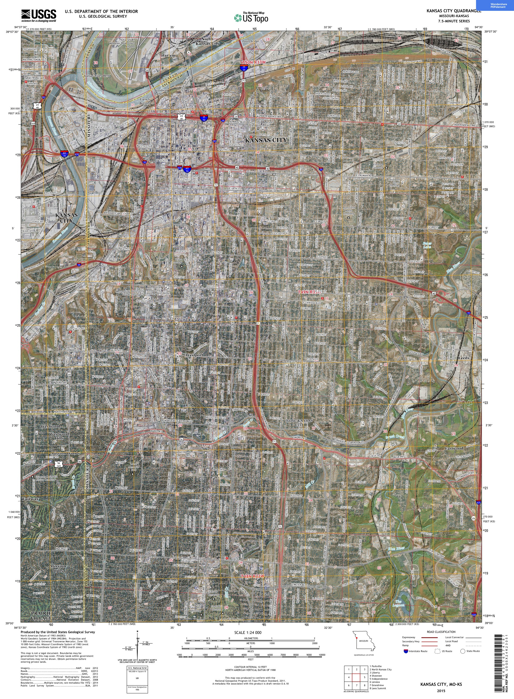

Kansas City, Missouri Geological Map

See the sites!
Kansas City, Missouri Bedrock Map

Kansas City's terrain is primarily cool temperate moist forest
Kansas City is located near the New Madrid fault line
Kansas City's bedrock is composed of sedimentary limestone and shale, as well as loess. With some sandstone, conglomerate and coal
Kansas City has many mitigation plans in place for many different scenarios. There is information about excessive heat, severe weather, and tips on dealing with winter weather.
Severe Weather can happen anytime and anywhere. Severe weather can produce hazardous conditions; which include thunderstorms, tornadoes, large hail, flooding and flash flooding, and winter storms. Preparing for severe weather is critical to protecting yourself and your family during dangerous storms.
In advance of the Winter Storm
Pay close attention to the NWS extended forecast thru the local media and NWS approved Weather Radios. Stock up on supplies, bring outside pets inside.
Make preparations for your home
During Winter Severe Weather